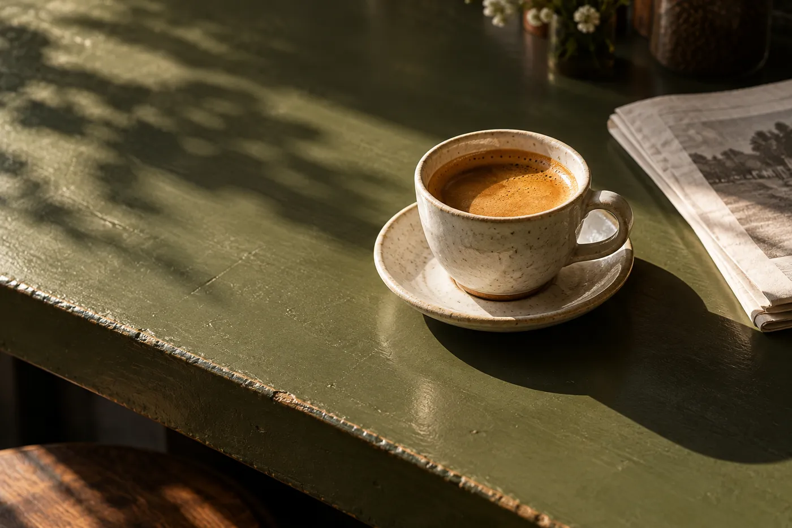
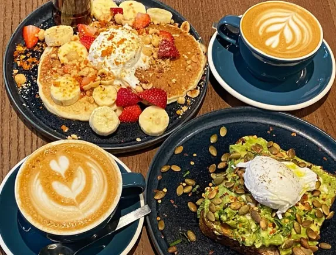

Before Coffee.
Take a moment.
A coffee shop in Brooklyn. Explore a sample coffee counter, then ask the café what it is serving today.
Explore the coffee counter →9 Meserole St, Brooklyn, NY 11206

Before the first sip
Choose a sample collection to see the cup size and description before asking about the current menu.
CoffeeExplore the sample collection, then ask the store about the current range and availability.
Explore coffee →Demo selection. Confirm products, prices and availability with the store.
The counter, considered
A sample coffee and café collection with space for the actual preparation, portion and price.


The real Before Coffee
Before Coffee is at 9 Meserole St, Brooklyn, NY 11206. Explore the business photographs, then plan a visit or call to ask about the current selection.
Plan your visit →